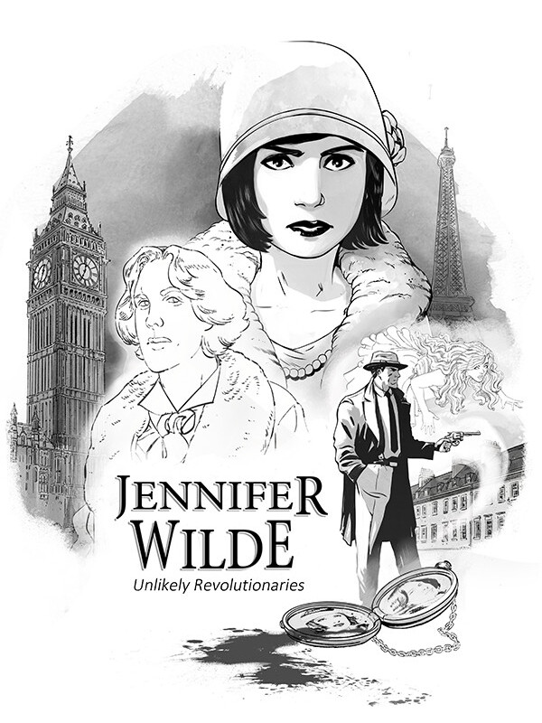

Jennifer Wilde Unlikely Revolutionaries
Jennifer Wilde Unlikely Revolutionaries
Details
|  | |
| Playtime | Not Played |
| Last Activity | Never |
| Added | 5/29/2025 23:03:30 |
| Modified | 7/2/2025 8:44:03 |
| Completion Status | Not Played |
| Library | Epic |
| Source | Epic |
| Platform | Epic Games |
| Release Date | 10/18/2022 |
| Community Score | |
| Critic Score | 68 |
| User Score | |
| Genre | Adventure Indie |
| Developer | |
| Publisher | |
| Feature | Single-Player |
| Links | Steam Twitch Epic Discord Uknown |
| Tag | [GGDeals] Synced |
Description
At the start of the Jazz Age in Paris in 1921, young French artist Jennifer Chevalier becomes embroiled in death, espionage and revolution which takes her across France, England and Ireland with the ghost of Oscar Wilde. A Point & Click 2D adventure with a unique comic book inventory design.

Jennifer believes the recent death of her father was no 'accident'. Finding a chained locket in her father's hotel, she attempts to use her childhood gift for talking to ghosts to call his spirit back. Unwittingly, the ghost recalled is Oscar Wilde, famous Irish playwright, whose secret affair with Jennifer's father has bound his ghost to the locket. Jennifer and Oscar find themselves following a trail of murder and revolution, through Paris, to London and Ireland, and into conflict with secret government organisations, a British occult spy network, and the Irish Revolutionary Army.
In a thrilling, witty and melancholic adventure. Jennifer and Oscar uncover dark secrets, deal with the loss of shared love and develop a deep friendship along the way.

Jennifer believes the recent death of her father was no 'accident'. Finding a chained locket in her father's hotel, she attempts to use her childhood gift for talking to ghosts to call his spirit back. Unwittingly, the ghost recalled is Oscar Wilde, famous Irish playwright, whose secret affair with Jennifer's father has bound his ghost to the locket. Jennifer and Oscar find themselves following a trail of murder and revolution, through Paris, to London and Ireland, and into conflict with secret government organisations, a British occult spy network, and the Irish Revolutionary Army.
In a thrilling, witty and melancholic adventure. Jennifer and Oscar uncover dark secrets, deal with the loss of shared love and develop a deep friendship along the way.
- As Jennifer discovers clues, she sketches in her book; which the player can study
- Use this knowledge to confront characters, prompt their memories and link clues together
- Take control of Jennifer and Oscar as you interrogate the living and dead to solve puzzles.
- Environmental puzzles will vex your brain, with crafty but logical solutions to be solved.
- Use Jennifer's artistic skills to trick the Gendarmerie and talk to spirits, while Oscar can use his ghostly powers to sneak invisibly past the SIS, in character-specific solutions.